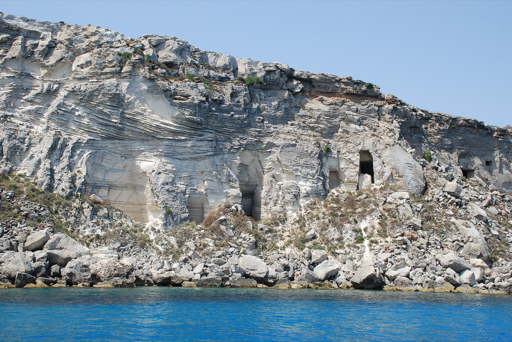
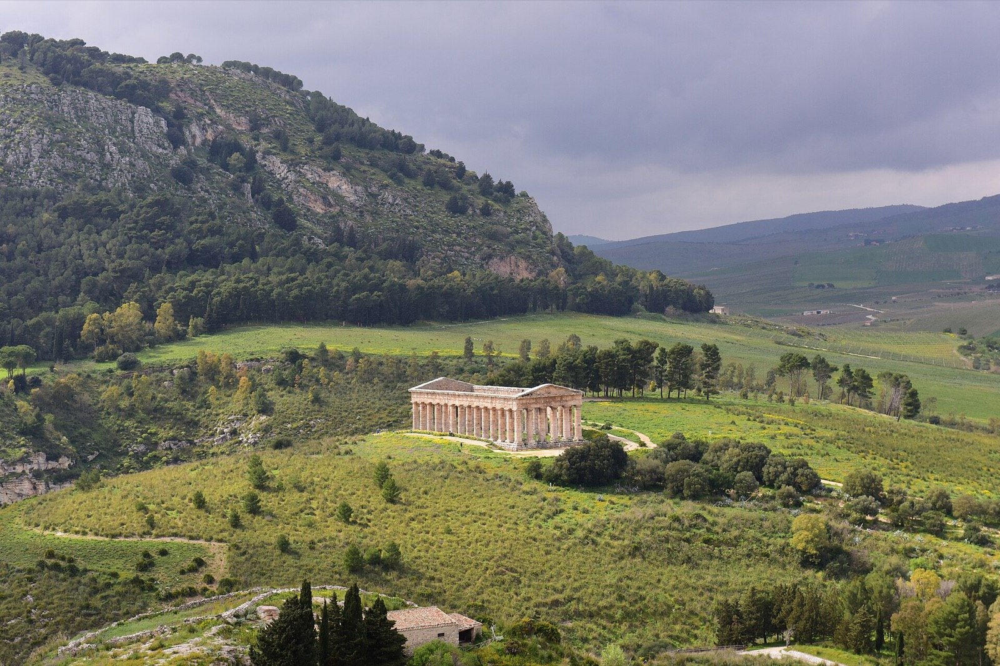
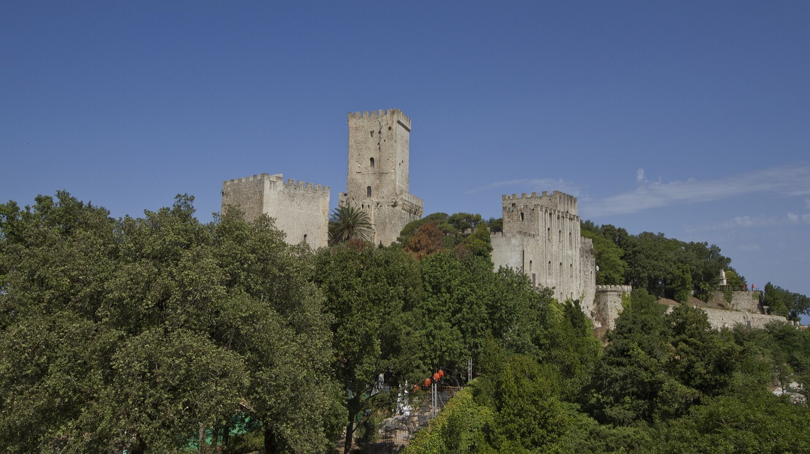

Trapani → Cefalù，只换一次酒店。
西端基地选Trapani，不住Palermo。 只有住在Trapani港口旁，Giusi说的Favignana“半日”才是真的半日；Segesta与Erice也都在这一侧。Palermo仍然去，但放在向东转场时精选看，不增加第三家酒店。
上午保护起来，主要活动从午后开始。
避免跨岛异地还车；Favignana当天不带车上岛。
两次海况窗口，取消一次也不毁行程。
“抵达 Palermo，看 Erice、Segesta、Cefalù，再留半天给 Favignana。”这五个地点全部保留；我们做的调整，是把它们从一张地点清单变成适合四个人、每天上午工作、只住两个基地的顺路版本。
两个基地，各自有明确任务
Trapani是执行西端活动的工具型基地；Cefalù是旅行真正慢下来的度假基地。先行动、后度假，也让Palermo自然成为两地之间的转场章节。
Base 01 · 9/17–20 · 3晚
Trapani
住老城与客运码头步行范围。Favignana不动车；Segesta、Erice都在约一小时圈内。

Base 02 · 9/20–23 · 3晚
Cefalù
住海边与老城可步行范围。工作后不坐长途车，直接游泳、走城、登山或出海。
为什么不是Palermo住三晚
Palermo当然值得更久，但那会让Favignana从“半日海岛”变成公路＋轮渡的长日。你们这次明确更想要度假感，所以把住宿晚数给Trapani与Cefalù；Palermo用一个认真挑选的下午认识，而不是假装完整玩遍。
每天怎么过
下面按9月17–23日直接执行。航班是唯一尚需出票后替换的时间；城市、轮渡、停车和活动逻辑已经按真实地理重新排过。
9/17周四 · Day 1
今晚住：Trapani
Torreglia → Palermo机场 → Trapani
今天的成功标准只有一个：顺利入住，不把交通日伪装成观光日。
在家工作；只带六晚小行李，四个人的大箱子尽量留在Torreglia。
VCE直飞PMO；出票时优先选傍晚前落地的班次，不为了便宜牺牲整晚。
PMO取同站还车的旅行车 / SUV；确认可放四人和行李、自动挡与第二驾驶员。
开往Trapani老城，纯驾驶约1小时15分；酒店必须能说明停车位置。
附近晚餐：鱼肉couscous或busiate配Trapani杏仁番茄酱，然后休息。
不要加：Palermo夜游、盐田日落或Erice。抵达时间稍晚，它们都会变成压力。

9/18周五 · Day 2
今晚住：Trapani
Favignana半日：真的下海，不环岛打卡
住在港口旁，才有资格把Favignana写成工作后的半日活动。
酒店工作；提前穿好泳衣，防晒、毛巾、水鞋装进一个轻包。
步行到Trapani码头；车留酒店或Parcheggio Egadi，不带上岛。
Liberty Lines快船到Favignana，航程约30–40分钟；按出票班次微调。
预订当地出租车 / 小面包车。先去Cala Azzurra浅水沙底下海，再到Cala Rossa看岩岸；海况合适才下第二次水。
傍晚快船回Trapani；20:30再吃正式晚餐。
今天只选一个版本：海况好＝两个海湾；风浪大＝镇中心＋Ex Stabilimento Florio，不同时塞博物馆、游船和两处海湾。9/18与9/19可在出发前48小时互换。


9/19周六 · Day 3
今晚住：Trapani
Segesta神庙 → Erice山城
西线唯一较满的一天，但两地在同一个地理方向，而且Erice缆车当晚延长运营。
酒店工作；12:15带轻午餐出发。
Segesta：先看Doric Temple，再搭园内接驳上山看古剧场与山谷。门票€14 / 人，临展时可能€16。
到Erice缆车下站，把车停P1 / P2；缆车约10分钟上山。
Erice：Duomo → 石街 → Balio花园 → Castello di Venere；把最好的光线留给城堡一侧。
Maria Grammatico吃热genovese与杏仁甜点，再留在山上晚餐；之后缆车下山。
2026日期优势：Erice缆车官网注明9月18、19、20日因活动延长至凌晨01:00。我们不需要玩到很晚，但不用为最后一班焦虑；往返当前€15 / 人。

9/20周日 · Day 4
今晚住：Cefalù
Trapani → Palermo精选半日 → Cefalù
Palermo不是“玩遍”，而是选一个能看懂城市的下午，再顺路进入第二基地。
工作、退房；11:15出发。只用有人值守 / 有监控的封闭车库，所有行李锁入后备箱，不留任何可见物品。
Trapani开往Palermo，在老城外围正规车库停车。
轻午餐 → Santa Caterina教堂与修道院甜点坊。
Fontana Pretoria → Piazza Bellini → Quattro Canti → Cathedral；体力有余才加40分钟Teatro Massimo导览。
开往Cefalù，入住、海边晚餐；今晚不再安排La Rocca。
诚实取舍：9/20是周日，Cappella Palatina中午后已无法进入，不把它写成假的下午项目。如果它对你们最重要，就必须把当天工作移开，预订11:30前的入场；否则接受这次Palermo是入门，不是完整一日。
9/21周一 · Day 5
今晚住：Cefalù
Cefalù建筑与La Rocca：全家可以分组
先避开热，再看金色马赛克；真正想走的人傍晚登山，爸妈不必陪爬。
酒店工作；上午不抢着去景点。
海边午餐、午休或短时间下水，躲过当天最晒的时段。
Cefalù Cathedral、金色马赛克与回廊；完整付费路线当前约€13 / 人。
La Rocca：穿防滑鞋，先到Tempio di Diana与观景点，再按体力决定是否继续。18:00前完成入场。
老城正式晚餐；在Piazza Duomo与海边散步会合。
父母版：不登山的人从Lavatoio Medievale走到Porta Marina、老港与海墙，黄昏再和登山组会合。若气温仍高于约27°C或地面湿滑，全家都不爬。

9/22周二 · Day 6
今晚住：Cefalù
Cefalù私船：把最后一个完整下午留给海
Favignana负责海岛海湾；今天负责轻松出海。两次海上体验不重复，而且互为天气保险。
酒店工作；早餐时让船家再次确认风、浪与出发码头。
轻午餐，避免上船前吃太重；晕船的人提前按自己的药物说明服用。
四人私船沿Cefalù海岸，船长按风向选Kalura、Mazzaforno等两至三处游泳 / 浮潜点。
回酒店洗澡、休息；想继续下水的人去沙滩，不再开车。
最后一晚晚餐；优先预约MICHELIN推荐的Cortile Pepe，或让酒店订一间稳定的海鲜餐厅。
海况取消：直接改成沙滩＋老城慢日，退款 / 改期规则在预订时写进确认邮件。前一天Favignana已经提供过一次海水体验，所以无需硬出船。

9/23周三 · Day 7
今晚住：Milan
Cefalù → PMO → Milan
这是允许“一个旅行地直接去下一个”的例外：9月24日必须已经在Milan。
最后一个酒店工作时段；前一晚已经完成大部分打包。
退房、简单午餐；不再安排Duomo或购物补课。
开往PMO，加油、同机场还车；至少给还车和安检留足缓冲。
优先PMO直飞LIN，其次MXP；只有价格 / 时刻明显更好才接受BGY。
入住Milan后只吃附近晚餐，9月24日再进入正式城市安排。
出票顺序：先锁这班西西里→Milan，再倒推9/17的VCE→PMO；不要先订不可退酒店，再被迫接受凌晨航班。
这条线最重要的三个开关
它不是僵硬跟团表。只在天气或体力真的改变体验时换，不临时再加新城市。
9/18与9/19可互换
出发前48小时把海况更稳的一天给Favignana；另一天下午做Segesta＋Erice。两天都保留上午工作。
La Rocca只让想走的人走
爸妈留在Duomo、海边与老港完全不“损失行程”；登山组下山后在Piazza Duomo会合。
不再加第三个城市
不加San Vito Lo Capo、Zingaro、Marsala、Agrigento或Palazzo Adriano。六晚的价值来自住进去，不是地图涂满。
按这个顺序订
先锁决定路线的库存，再订可替换的活动；不要反过来。
两段航班
查航班 →9/17 VCE→PMO晚下午抵达；9/23 PMO→Milan 15:30以后出发。
两间房 × 两个基地
看住宿口径 →Trapani 9/17–20住港口步行区；Cefalù 9/20–23住海边 / 老城可步行区，均先确认桌面、Wi-Fi与停车。
PMO同站租车
机场官方租车信息 →四位成人选能放行李的车；Favignana当天不带车上岛。
Favignana交通包
Liberty Lines →往返快船＋当地小面包车 / taxi；买可改班次，海况差时切换文化版。
Segesta＋Erice
核实当日运营 →Segesta门票 / 园内接驳、Erice缆车；先看9/18–20延时公告再付款。
Cefalù私船＋最后晚餐
询14:00船 →先问风浪取消与退款，再订14:00船；Cortile Pepe需要尽快询位。
住宿怎么选（默认收起 · 酒店不是本页主角）
港口步行优先
硬条件是08:00前能吃早餐 / 拿咖啡、房内或公共区能稳定工作、步行到Liberty Lines码头、车辆有明确车库。
- 先查Room of Andrea、Badia Nuova或同区大体量酒店。
- 不要为了海景住到城外resort；Favignana当天会损失最宝贵的半小时。
海与老城不用二选一
优先Cefalù Sea Palace的步行便利与停车；若全家更看重园区、泳池和岩湾，再比较Le Calette Bay / N°5。
- 订海景房才值得；两间尽量同一楼层。
- Le Calette不在镇心，先书面确认接驳时刻。
一句话看懂这六晚
Trapani三晚负责“为什么来西线”：Favignana、Segesta、Erice；Cefalù三晚负责“为什么值得住下来”：工作后立刻下海、看建筑、徒步、出船、吃饭。Palermo是转场中的精选章节，不是假装完整的一日游。
Giusi建议已如何落位
- Favignana · 9/18半日
- Segesta＋Erice · 9/19
- Palermo · 9/20精选下午
- Cefalù · 9/20–23三晚基地
- Villa Schuler属于她的东线Taormina建议；既然西线已选，本版不保留。
执行信息与图片来源
官方 / 一手信息：Liberty Lines、Parcheggio Egadi、Ex Stabilimento Florio、Segesta、Erice缆车、Palatine Chapel、Cefalù Duomo、La Rocca与Cefalù Boat Tours。班次和海上活动须在出发前48小时再次确认。
新增图片：Trapani · Myke Bryan / CC BY 2.0；Segesta · Tiberio Frascari / CC0；Erice · trolvag / CC BY-SA 3.0；Favignana · Pizzodaniele / CC BY-SA 3.0。页面使用的是下载到本地并缩放后的版本，不依赖远程热链。